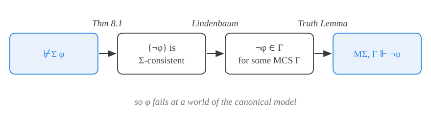
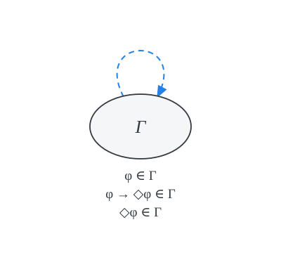
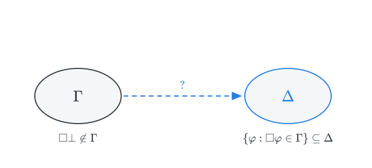
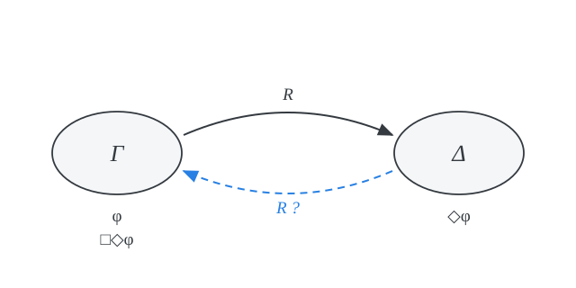
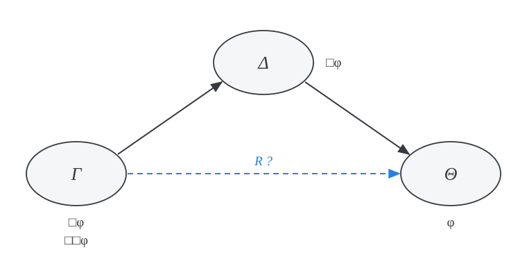
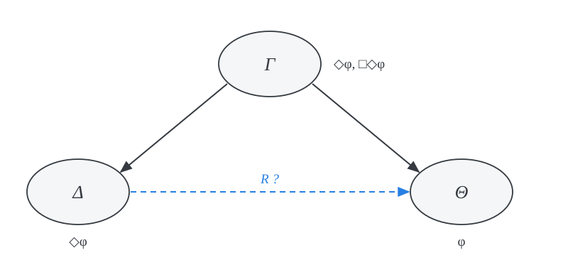
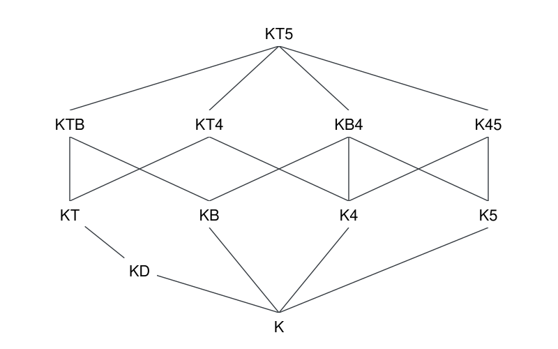
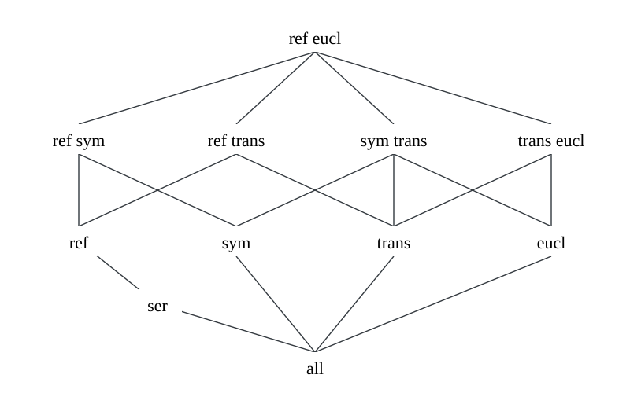
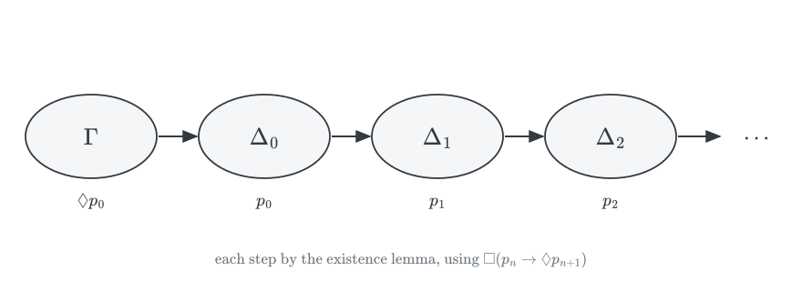
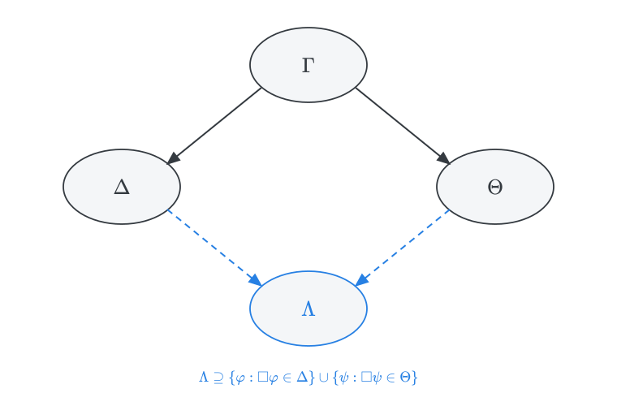

PHIL 452 · Modal Logic
Given a normal modal system \(\Sigma\), if \(\varphi\) is a modal formula:
\[ \begin{array}{lll} \nvdash_\Sigma \varphi & \Rightarrow & \text{for some max $\Sigma$-con $\Gamma$}, \mathcal{M}_\Sigma, \Gamma \nVdash \varphi \\ & \Rightarrow & (W_\Sigma, R_\Sigma) \not \models \varphi\\ \end{array} \] So, if the canonical frame \((W_\Sigma, R_\Sigma)\) for \(\Sigma\) is in \(\mathcal{C}\), then \(\Sigma\) is complete with respect to \(\mathcal{C}\).
If \(\models \varphi\), then \(\vdash_{\textsf{K}} \varphi\).
Proof. We rehearse the same argument again:
Suppose \(\nvdash_{\textsf{K}} \varphi\). Then \(\neg \varphi\) is \(\textsf{K}\)-consistent.
By Lindenbaum’s lemma, \(\{\neg\varphi\}\) may be extended to a maximal \(\textsf{K}\)-consistent set \(\Gamma\).
\(\Gamma \in W_{\textsf{K}}\), and, by the truth lemma, \(\mathcal{M}_{\textsf{K}}, \Gamma \Vdash \neg \varphi\).
So \(\mathcal{M}_{\textsf{K}}, \Gamma \nVdash \varphi\). Hence \(\not\models \varphi\).

Consider the case of \(\textsf{KT}\). If \(\nvdash_{KT} \varphi\), then the argument above yields that there is some \(\Gamma \in W_{\textsf{KT}}\) for which \(\mathcal{M}_{\textsf{KT}}, \Gamma \nVdash \varphi\). But notice that a further step is required to justify completeness with respect to the class of reflexive frames.
The fact that \(\mathcal{M}_{\textsf{KT}} \nVdash \varphi\) will help only if the canonical frame \((W_{\textsf{KT}}, R_{\textsf{KT}})\) for \(\textsf{KT}\) is reflexive. That is, if \(R_{\textsf{KT}}\) is reflexive on \(W_{\textsf{KT}}\).
\(\textsf{KT}\) is complete with respect to the class of all reflexive frames:
If \(\models_{\text{ref}} \varphi\), then \(\vdash_{\textsf{KT}} \varphi\).
Proof. We argue that \(R_{\textsf{KT}}\) is reflexive on \(W_{\textsf{KT}}\): \(\Gamma R_{\textsf{KT}} \Gamma\) for each \(\Gamma \in W_{\textsf{KT}}\).
That is, if \(\Gamma\) is a maximal \(\textsf{KT}\)-consistent set, then for each modal formula \(\varphi\):
Fix \(\varphi \in \Gamma\). Since \(\vdash_{\textsf{KT}} \varphi \to \Diamond \varphi\), \(\varphi \to \Diamond \varphi \in \Gamma\). By closure under \(\textsf{MP}\), \(\Diamond \varphi \in \Gamma\).

For every formula \(\varphi\): \(\ \mathcal{M}_\Sigma \Vdash \varphi\) iff \(\vdash_\Sigma \varphi\).
Proof. The argument is simple.
(\(\Leftarrow\)) Every maximal \(\Sigma\)-consistent set contains all theorems of \(\Sigma\), so by the truth lemma all theorems is true at all worlds of \(\mathcal{M}_\Sigma\).
(\(\Rightarrow\)) If \(\nvdash_\Sigma \varphi\), then \(\neg\varphi\) belongs to some maximal \(\Sigma\)-consistent set \(\Gamma\), and \(\mathcal{M}_\Sigma, \Gamma \nVdash \varphi\).
So the canonical model verifies all and only theorems of \(\Sigma\).
The question now is whether theorems of \(\Sigma\) are valid in the canonical frame for \(\Sigma\). That is, are the theorems of \(\Sigma\) true under every valuation, not just under \(V_\Sigma\)?
Completeness with respect to \(\mathcal{C}\) only requires the frame to be in \(\mathcal{C}\). Canonicity asks for more: that the frame validate \(\Sigma\).
\(\Sigma\) is a canonical normal system iff the canonical frame for \(\Sigma\) validates all theorems of \(\Sigma\).
An axiom is canonical iff whenever a normal system \(\Sigma\) contains its substitution instances, its canonical frame \((W_\Sigma, R_\Sigma)\) validates them.
Whenever a normal system \(\Sigma\) contains its substitution instances, \(R_\Sigma\) satisfies the relevant condition.
| axiom | condition on \(R_\Sigma\) | |
|---|---|---|
| \(\textsf{D}\) | \(\Box p \to \Diamond p\) | serial |
| \(\textsf{T}\) | \(\Box p \to p\) | reflexive |
| \(\textsf{B}\) | \(p \to \Box \Diamond p\) | symmetric |
| \(\textsf{4}\) | \(\Box p \to \Box \Box p\) | transitive |
| \(\textsf{5}\) | \(\Diamond p \to \Box \Diamond p\) | euclidean |
For example:
\(R_\textsf{KD}\) is serial on \(W_\textsf{KD}\)
\(R_\textsf{KT}\) is reflexive on \(W_\textsf{KT}\)
\(R_\textsf{KB}\) is symmetric on \(W_\textsf{KB}\)
\(R_\textsf{K4}\) is transitive on \(W_\textsf{K4}\)
\(R_\textsf{K5}\) is euclidean on \(W_\textsf{K5}\)
We proceed to argue that \(R_\Sigma\) satisfies the relevant condition in each case.
To conclude that the axiom is canonical, we rely on a further observation:
for a frame to satisfy the condition is sufficent for the frame to validate the axiom.
So if \(R_\Sigma\) satisfies the condition, the canonical frame validates the axiom.
\[ \Sigma \ \text{contains all instances of the axiom} \ \Rightarrow \ R_\Sigma \ \text{satisfies the condition} \ \Rightarrow \ (W_\Sigma, R_\Sigma) \ \text{validates all instances of the axiom} \]
In each case, we argue that \(R_\Sigma\) relates certain maximal consistent sets:
We unpack the condition in terms of the definition of \(R_\Sigma\) in either the \(\Box\) or \(\Diamond\) form.
Use the axiom, whose instances belong to each \(\Gamma \in W_\Sigma\), to move a formula from one set to another.
In the diagrams below, solid arrows are given and the dashed arrow is to be shown.
Several proofs, including the existence lemma, use one crucial step.
If \(\vdash_\Sigma (\varphi_1 \wedge \dots \wedge \varphi_n) \to \psi\), then \(\vdash_\Sigma (\Box\varphi_1 \wedge \dots \wedge \Box\varphi_n) \to \Box\psi\).
Proof. By \(\textsf{RK}\), \(\vdash_\Sigma \Box(\varphi_1 \wedge \dots \wedge \varphi_n) \to \Box\psi\). It remains to verify that \[\vdash_\Sigma (\Box\varphi_1 \wedge \dots \wedge \Box\varphi_n) \to \Box(\varphi_1 \wedge \dots \wedge \varphi_n).\] But \(\Sigma\) extends \(\textsf{K}\), and we observed that \(\vdash_{\textsf{K}} (\Box\varphi_1 \wedge \dots \wedge \Box\varphi_n) \to \Box(\varphi_1 \wedge \dots \wedge \varphi_n)\).
With \(\psi = \bot\), this is the step used for \(\textsf{D}\) below.
If \(\Sigma\) includes substitution instances of \(\textsf{D}\), then \(R_\Sigma\) is serial on \(W_\Sigma\): if \(\Gamma\) is a maximal \(\Sigma\)-consistent set, there is \(\Delta\) with \(\{\varphi : \Box\varphi \in \Gamma\} \subseteq \Delta\).
Proof. We argue that \(\{\varphi : \Box \varphi \in \Gamma\}\) is \(\Sigma\)-consistent. Suppose not. Then \(\vdash_{\Sigma} (\varphi_1 \wedge \dots \wedge \varphi_n) \to \bot\) for some \(\Box\varphi_1, \dots, \Box\varphi_n \in \Gamma\). By the lemma,
\[\vdash_\Sigma (\Box\varphi_1 \wedge \dots \wedge \Box\varphi_n) \to \Box \bot.\]
It follows that \(\Box\bot \in \Gamma\). Given axiom \(\textsf{D}\), \(\Diamond \bot \in \Gamma\). But \(\vdash_\Sigma \Box \neg \bot\), i.e., \(\neg\Diamond\bot \in \Gamma\). So, \(\Gamma\) is \(\Sigma\)-inconsistent, which contradicts the assumption that \(\Gamma\) is maximal \(\Sigma\)-consistent.

If \(\Sigma\) includes substitution instances of \(\textsf{B}\), then \(R_\Sigma\) is symmetric on \(W_\Sigma\): if \(\Gamma, \Delta\) are maximal \(\Sigma\)-consistent, then if \(\Gamma R_\Sigma \Delta\), then \(\Delta R_\Sigma \Gamma\).
Proof. Given maximal \(\Sigma\)-consistent sets \(\Gamma, \Delta\), we argue that
Let \(\varphi \in \Gamma\). By \(\textsf{B}\), \(\varphi \to \Box \Diamond \varphi \in \Gamma\), so \(\Box\Diamond\varphi \in \Gamma\). Since \(\Gamma R_\Sigma \Delta\), \(\Diamond \varphi \in \Delta\).

If \(\Sigma\) includes substitution instances of \(\textsf{4}\), then \(R_\Sigma\) is transitive on \(W_\Sigma\): if \(\Gamma, \Delta, \Theta\) are maximal \(\Sigma\)-consistent, then if \(\Gamma R_\Sigma \Delta\) and \(\Delta R_\Sigma \Theta\), then \(\Gamma R_\Sigma \Theta\).
Proof. Given maximal \(\Sigma\)-consistent sets \(\Gamma, \Delta, \Theta\), we argue
Assume \(\{\varphi : \Box\varphi \in \Gamma\} \subseteq \Delta\) and \(\{\varphi : \Box\varphi \in \Delta\} \subseteq \Theta\). Let \(\Box \varphi \in \Gamma\). By \(\textsf{4}\), \(\Box\Box\varphi \in \Gamma\). Since \(\Gamma R_\Sigma \Delta\), \(\Box \varphi \in \Delta\). Since \(\Delta R_\Sigma \Theta\), \(\varphi \in \Theta\).

If \(\Sigma\) includes substitution instances of \(\textsf{5}\), then \(R_\Sigma\) is euclidean on \(W_\Sigma\): if \(\Gamma, \Delta, \Theta\) are maximal \(\Sigma\)-consistent, then if \(\Gamma R_\Sigma \Delta\) and \(\Gamma R_\Sigma \Theta\), then \(\Delta R_\Sigma \Theta\).
Proof. Given maximal \(\Sigma\)-consistent sets \(\Gamma, \Delta, \Theta\), we argue
Assume \(\{\varphi : \Box\varphi \in \Gamma\} \subseteq \Delta\) and \(\{\Diamond \varphi : \varphi \in \Theta\} \subseteq \Gamma\). Let \(\varphi \in \Theta\). Since \(\Gamma R_\Sigma \Theta\), \(\Diamond \varphi \in \Gamma\). By \(\textsf{5}\), \(\Box \Diamond \varphi \in \Gamma\). Since \(\Gamma R_\Sigma \Delta\), \(\Diamond \varphi \in \Delta\).

If \(\Sigma\) extends \(\textsf{K}\) with the canonical axioms that correspond to conditions \(C_1, \dots, C_n\), then \(\Sigma\) is complete with respect to the class of frames that satisfy \(C_1, \dots, C_n\).
Proof. If \(\nvdash_\Sigma \varphi\), then \(\varphi\) fails at some world of \(\mathcal{M}_\Sigma\). Since \(\Sigma\) contains all instances of each axiom, \(R_\Sigma\) satisfies all of \(C_1, \dots, C_n\). Thus \(\varphi\) fails on a frame in the class.
For example, \(R_{\textsf{S4}}\) is reflexive and transitive, and \(R_{\textsf{S5}}\) is reflexive and euclidean.
The canonical model gives us more than we have used.
If \(\Gamma \nvdash_\Sigma \varphi\), then \(\Gamma \cup \{\neg\varphi\}\) is true at some world of \(\mathcal{M}_\Sigma\).
Proof. \(\Gamma \cup \{\neg\varphi\}\) is \(\Sigma\)-consistent (Theorem 8.1). By Lindenbaum’s lemma, it extends to a maximal \(\Sigma\)-consistent set \(\Delta\). By the truth lemma, every member of \(\Gamma \cup \{\neg\varphi\}\) is true at \(\Delta\).
Given a canonical system \(\Sigma\) and the relevant class \(\mathcal{C}\): if a world in a model on a frame in \(\mathcal{C}\) that verifies \(\Gamma\) verifies \(\varphi\) true, then \(\Gamma \vdash_\Sigma \varphi\).


Combined with soundness, each system in the landscape characterizes the corresponding class of frames. Soundness holds because each axiom is valid on the frames that satisfy its condition (frame definability), and \(\textsf{MP}\) and \(\textsf{RN}\) preserve validity on any class of frames.
Not every normal system is canonical.
\(\textsf{GL}\) extends \(\textsf{K}\) with all instances of Löb’s axiom: \[\Box(\Box p \to p) \to \Box p \tag{\textsf{L}}\]
Löb’s axiom is valid on a frame iff the frame is transitive and conversely well-founded: there is no infinite chain \(w_0 R w_1 R w_2 R \cdots\).
\(\textsf{GL}\) is sound and complete with respect to this class of frames, and even with respect to the finite, transitive, irreflexive frames.
But the canonical frame for \(\textsf{GL}\) is not conversely well-founded.

The set \(\{\Diamond p_0\} \cup \{\Box(p_n \to \Diamond p_{n+1}) : n \geq 0\}\) is \(\textsf{GL}\)-consistent: each finite subset is true at the root of a long enough finite chain. Extend it to a maximal \(\textsf{GL}\)-consistent \(\Gamma\).
Since \(\Diamond p_0 \in \Gamma\), there is \(\Delta_0\) with \(\Gamma R_{GL} \Delta_0\) and \(p_0 \in \Delta_0\). Since axiom \(\textsf{4}\) each instance of \(\Box(p_k\to\Diamond p_{k+1})\) is placed into each \(\Delta_n\). So \(p_n \to \Diamond p_{n+1}\in\Delta_n\), hence \(\Diamond p_{n+1}\in\Delta_n\), and the existence lemma gives \(\Delta_{n+1}\) with \(p_{n+1}\in\Delta_{n+1}\).
So the canonical frame contains an infinite chain, and it does not validate Löb’s axiom. Completeness of \(\textsf{GL}\) requires the use of alternative methods, such as filtrations and finite models.
\(\textsf{S4.2}\) extends \(\textsf{S4}\) with all instances of \[\Diamond\Box p \to \Box\Diamond p \tag{\textsf{.2}}\]
\(\textsf{.2}\) is canonical for directed frames: if \(\Gamma R_\Sigma \Delta\) and \(\Gamma R_\Sigma \Theta\), then there is \(\Lambda\) with \(\Delta R_\Sigma \Lambda\) and \(\Theta R_\Sigma \Lambda\).
Hint: show that \(\{\varphi : \Box\varphi \in \Delta\} \cup \{\psi : \Box\psi \in \Theta\}\) is \(\Sigma\)-consistent, and use Lindenbaum’s lemma.
